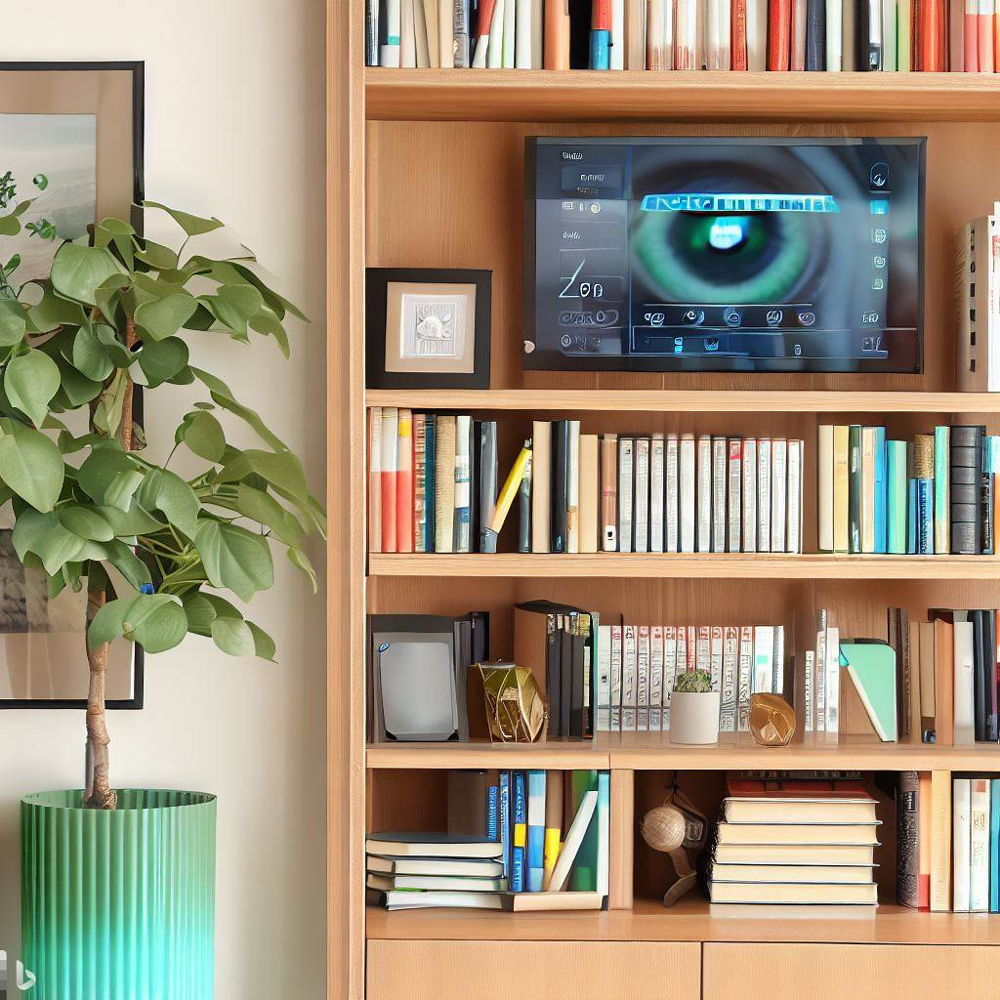

When it comes to setting up a wall-mounted security display or displaying cameras discreetly in a bookcase, you may initially think incorporating it into your Home Assistant dashboard is the best option or that you need to mini PC attached to a monitor.
Home Assistant, while an excellent smart home management platform, will struggle to handle multiple live camera streams resulting in unbearable delays or glitchy streams. The best option is actually relatively inexpensive and simple to setup. It involves using a Google TV chromecast and a computer monitor (with HDMI port) or a small TV, of which you might likely find you already have these lying around.
In this blog post, I will guide you through the process of casting the Blue Iris UI3 interface to both a Google TV Chromecast and a computer monitor, ensuring a high-quality display and lag-free security camera video streams. Although you can just use cast all the things to case the Blue Iris UI3 directly to your Chromecast, you will soon find that after 10min your Chromecast will enter ambient mode and you will lose connection with the display of your camera feeds. The following guide will sort all of this out for your
Prerequisites.
Before we begin, make sure you have the following:
A Google TV Chromecast connected to your monitor or TV.
Blue Iris software installed and running on a computer.
Python 3
This should work with other Chromecast devices, just note that some of the menus and steps listed below may differ.
Step 1: Enable Developer Mode and USB Debugging on Chromecast
Connect your Chromecast to the same Wi-Fi network as your computer and TV/monitor.
On your Chromecast device go to Settings and the System submenu.
In System click on about and scroll down until you find Android TV OS Build.
Press the OK or Enter button 7 times to enable developer mode. - You should see a message saying ‘You are now a developer.’
Note that at about 5 presses it should start to notify that you are about the enable developer mode.
Now, go back to the main settings menu and select Developer options.
Turn on Enable developer options if not already
Then turn on USB debugging.
Step 2: Get the IP Address of the Chromecast
Open the Network and Internet menu in the Chromecast and the IP address should be displayed in the right-hand panel.
Or alternatively;
Open the Google Home app on your smartphone or tablet.
Tap on your Chromecast device, then tap on the gear icon to access the device settings.
The IP address should be displayed under the Device information section.
Step 3: Install Android Developer Kit (ADB)
Download the Android SDK Platform-Tools package from the official Android website.
Extract the downloaded zip file to a location on your computer.
Open a command prompt or terminal window and navigate to the folder containing the extracted files.
Execute the following command in the command prompt or terminal:
adb connect <YOUR_CHROMECAST_IP_ADDRESS>Replace <YOUR_CHROMECAST_IP_ADDRESS> with the IP address you obtained earlier.
On your Chromecast-connected TV or monitor, you will see a pop-up notification or a prompt asking for your permission to allow the connection from the specified IP address.
Accept the connection by selecting “Allow” or “Accept” on your Chromecast device.
Once you’ve accepted the connection request, you can proceed with Step 4 and enter the command to change the screen timeout value.
Step 4: Change the Screen Timeout Value on Chromecast
- Enter the following command to change the screen timeout value to one month (in seconds):
adb shell settings put system screen_off_timeout 2592000000Step 5: Turn on ‘Stay Awake’ on Chromecast
On your Chromecast device still within the Developer options.
Turn on Stay awake.
Step 6: Set Up Camera Groups in Blue Iris
Launch the Blue Iris software on your computer.
Go to the ‘Cameras’ tab and select the cameras you want to group together to display on the Chromecast.
Right-click on the selected cameras and choose ‘Group Cameras.’
Give the camera group a name and click ‘OK.’
Step 7: Setup Cast All The Things (CATT)
Open a command prompt or terminal window on your computer.
-
pipx install cattNoteYou can using pip, however pipx is recommended by the developer of CATT
Next you need to identify your chromecast device. To scan you local network run the following
catt scan- Take note of the relevant chromecase device name. You will need it in the next step.
Step 8: Cast Blue Iris UI3 to Chromecast
Open a web browser and navigate to http://<BLUEIRIS-IP-ADDRESS>:81/ui3.htm? to check the Blue Iris UI3 interface is functioning.
To cast the UI3 web interface to your chromecast and monitor enter the following command
catt cast_url http://\<BLUEIRIS-IP-ADDRESS\>:81/ui3.htm?timeout=0Replace
with the IP of your Blue Iris server. NoteNote we have added
timeout=0to the url to prevent the web interface timing outTo stop casting or if there is a disconnection and you need to recast, you first need to run the stop command
catt -d <name_of_chromecast> stop- To cast only the camera group you created add the
group=groupnameparameter to the url
catt cast_url http://\<BLUEIRIS-IP-ADDRESS\>:81/ui3.htm?timeout=0&group=groupnameI would also recommended adding the clipview=confirmed parameter if you have AI detection on. This will show thumbnails of confirmed events.
- Further url parameters can been found in the UI3 documentation.
Conclusion
By following these steps, you can easily cast the Blue Iris UI3 interface to your Google TV Chromecast and attached screen. The use of CATT ensures a smooth and high-quality display, while the screen timeout changes and ‘stay awake’ settings on the Chromecast prevent disruptions during extended use. Enjoy easy access to your Blue Iris cameras on the big screen!